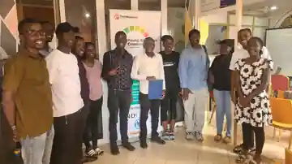

Responsible AI for Community Projects
A practical session on fairness, privacy, safety, consent and human oversight when building AI projects around real community needs.
Events
Kampala Hub events are designed around practical learning, responsible AI and moving ideas from conversation into action.
Local sessions for learners, builders, researchers and community problem-solvers.
Upcoming
Each event is designed to leave participants with a clearer skill, stronger question, useful collaborator or concrete next step.
A practical session on fairness, privacy, safety, consent and human oversight when building AI projects around real community needs.
Bring a local problem, not a polished solution. We will work through users, evidence, data needs, risks and whether AI is actually the right tool.
A working session for early projects, prototypes and research ideas. Share what you are building, get feedback and identify the next test that matters.
Community in action
Workshops and collaborative sessions create space to exchange ideas, build skills and test approaches together.


How we use events
We are less interested in filling rooms than in helping people build capability, relationships and projects that can continue after an event ends.
Short, focused sessions that make AI concepts and tools more usable.
Project clinics and small-team work around problems that matter locally.
Responsible AI conversations that question assumptions before deployment.